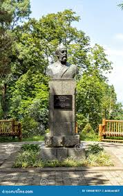

Про нас
Історія Батумського ботанічного саду
Батумський ботанічний сад був заснований у 1912 році за ініціативою відомого ботаніка та географа Андрія Краснова. Його метою було створення унікальної колекції рослин із різних куточків світу.
На сьогоднішній день сад охоплює площу понад 108 гектарів і є домівкою для тисяч видів рослин із дев'яти географічних регіонів, таких як Східна Азія, Гімалаї, Середземномор'я, Центральна та Південна Америка.
Регіони флори
Ботанічний сад розділений на тематичні сектори, кожен із яких представляє флору окремого регіону:
- Східна Азія: Вишні, японські клени та багато інших.
- Австралія: Евкаліпти та інші унікальні дерева.
- Середземномор'я: Оливкові дерева, лаври, цитрусові рослини.
- Америка: Кактуси, агави, тропічні ліани.
Особливі експонати
Серед найцікавіших рослин Батумського ботанічного саду:
- Секвойя: одне з найвищих дерев у світі.
- Лотос: символ чистоти та краси, представлений у водоймах саду.
- Сакура: японська вишня, яка розквітає навесні.